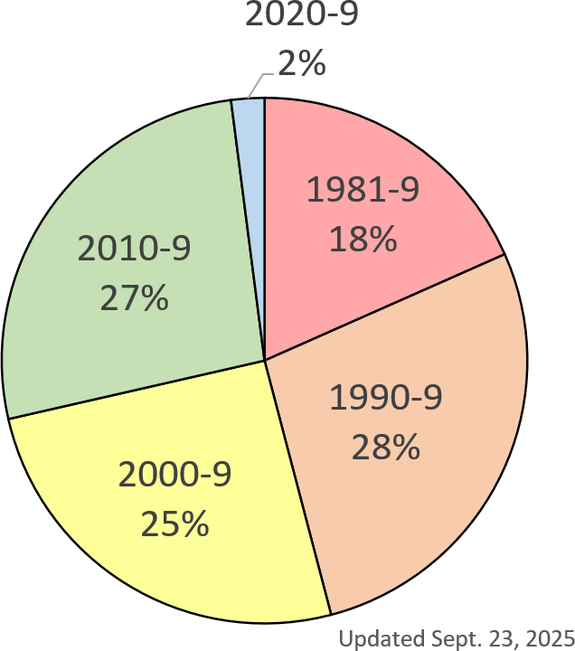
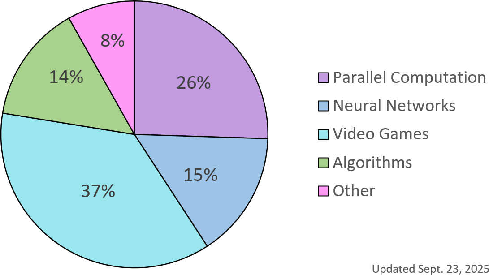
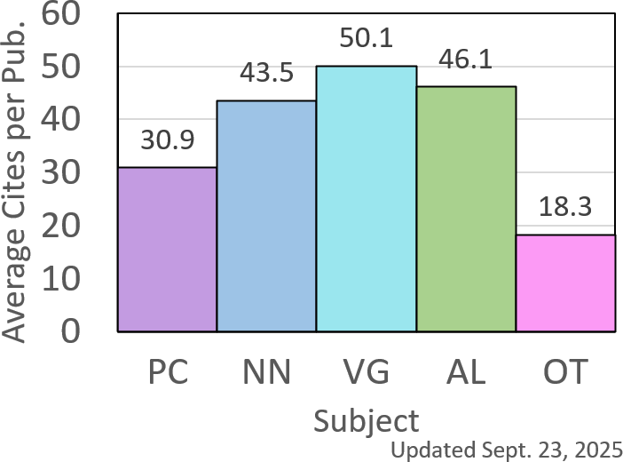

Fig. 1: Number of cites per publication for publications with at least 10 cites.
Fig. 1 shows the sorted
number of cites per publication for publications that have been cited at least 10 times.
Each vertical bar indicates the number of cites for a single publication
with the color indicating the decade of publication.
Conclusion
If we define a high impact publication to be
one that has been cited 10 or more times, then I have high-impact
publications over the four decades of my academic career.
Fig. 2 shows the proportion of cites
by decade of publication. Papers published in the 1980s were written
during my undergraduate, graduate student, and Assistant Professor days.
My first paper was published in 1983.
The number of cites received
increased slowly as my interests shifted from parallel
computation to neural networks.
Publications in the 1990s started in neural networks and gradually
shifted over to video game development, which remained my main interest
for the next two decades.

Fig. 2: Proportion of cites by decade of publication.
Fig. 2 shows the highest number of cites (34%) came during the 2000s,
and so you can say that that was the decade in which my research had the greatest impact.
The 1990s come second with significantly fewer cites (25%), followed by the 1980s
and 2010s (around 20% each).

Fig. 3: Proportion of cited publications by decade of publication.
Fig. 3 shows that the 1980s was my least productive decade with
20% of my cited publications and the 1990s was my most productive decade
with 28% of my cited publications.
The remaining decades saw 26% of my cited publications each, which is about
what you would expect if cites were uniformly distributed over the decades (25%).

Fig. 4: Average cites per cited publication by decade of publication.
A clearer picture emerges if you divide out the data used to produce
Fig. 2 and Fig. 3 to get the
average number of cites per publication in each of the four decades,
as shown in Fig. 4. Therefore, we may
conclude that my publications in the 2000s
had the highest number of cites per paper, and therefore the highest impact per paper.
The other entries in Fig. 4 show a decline over time of the
number of cites per paper, which is consistent with the hypothesis that the number
of cites per paper increase with time, assuming that they stay relevant.
Conclusion
-
If we define the total impact of a decade to be the total number of cites
received for articles, papers, and books published during that time period, then
my decade of highest total impact is 2000-2009.
-
If we define the production of a decade to be the number of cited
articles, papers, and books published during that time period, then
my decade of lowest production is 1980-1989
and during the three other decades my production varied by only 2%
of my overall production
-
If we define the average impact of a decade to be the average number of cites
received for articles, papers, and books published during that time period, then
my decade of highest total impact is 2000-2009.
Section 2 alludes to the fact that my publications can
be grouped roughly by subject. In more detail, they can be broken
up into four distinct areas:
neural networks (including threshold circuits, Boltzmann machines,
and Hopfield networks),
parallel computation
(including parallel complexity theory, circuit complexity, interconnection networks,
routing, and sorting networks),
video games
(including procedural content generation),
and other
(including path planning, sequential algorithms and data structures,
mathematical puzzles, and my guides for referees and presenting papers).
Publications that fit into more than one of the above categories are
placed arbitrarily into the first one into which it falls, which
therefore make these categories non-overlapping.
For example, threshold circuit complexity is included under neural networks,
while circuit complexity using other types of gate are included under
parallel computing.

Fig. 5: Proportion of cites by subject.
While
Fig. 5 shows that my video game publications
received more cites than any two of the three remaining categories combined,
Fig. 6 shows that I published more in the video game
category than any other by quite a large margin.

Fig. 6: Proportion of cited publications by subject.
Fig. 7 puts things in a clearer perspective.

Fig. 7: Average cites per cited publication by subject.
According to Fig. 7, my neural network publications (NN have
a higher average number of cites per paper than the other three categories,
followed pretty closely by my video game publications (VG).
The two remaining categories in Fig. 7 are parallel computation (PC) and other (OT).
Conclusion
-
If we define the total impact of a subject area to be the total number of cites
received for articles, papers, and books published in that area, then
my video game publications have the highest total impact.
-
If we define the production of a subject area to be the number of cited
articles, papers, and books published in that area, then
my video game publications have the highest production.
-
If we define the average impact of a subject area to be the average number of cites
received for articles, papers, and books published in that area, then
my neural network publications have the highest average impact,
followed by my video game publications.